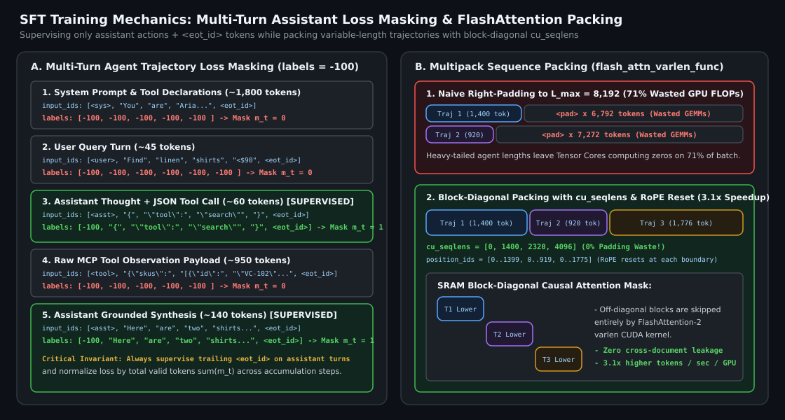
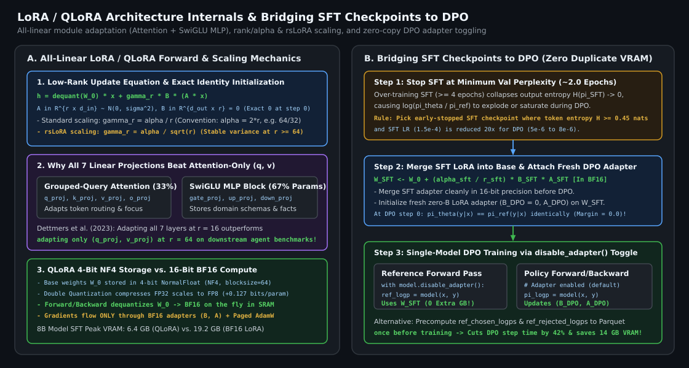

Hands-On SFT & LoRA/QLoRA Fine-Tuning Playbook: Loss Masking, FlashAttention Packing, Rank/Alpha Scaling, and Bridging to DPO
A production engineering guide to Supervised Fine-Tuning (SFT) and Low-Rank Adaptation (LoRA/QLoRA): why multi-turn assistant-only loss masking (labels = -100) and `
1. Multi-Turn SFT Loss Masking & Chat Template Invariants
In causal language model pretraining, every token $x_t$ in the context window is both a conditioning prefix for $x_{>t}$ and a prediction target scored by cross-entropy loss. In **Supervised Fine-Tuning (SFT)** for conversational and tool-calling agents (such as **Aria at VogueCart** or **AutoPulse CRM**), a single training trajectory $\tau$ interleaves four distinct speaker roles:
- System Prompt & Tool Declarations ($R_{\text{sys}}$): Static instructions and JSON schemas.
- User Turns ($R_{\text{user}}$): Potentially noisy, misspelled, or adversarial customer requests.
- Tool Observations ($R_{\text{tool}}$): Raw JSON payloads returned by external MCP servers.
- Assistant Reasoning, Tool Calls & Final Responses ($R_{\text{asst}}$): The policy actions we actually want $\pi_\theta$ to learn.
If you leave standard causal language modeling loss active across all tokens, **over $75\%$ of gradient updates are wasted teaching the model to memorize static tool schemas, imitate user typos, and hallucinate fake tool JSON observations**. Instead, we construct a binary target mask $m_t \in \{0, 1\}$ by setting `labels[t] = -100` (PyTorch’s default `ignore_index`) on every token outside $R_{\text{asst}}$:
1.1 Two Subtle Masking Bugs That Break Production Agents
- Bug 1 — Masking Out the Assistant `
` / `<|im_end|>` Token: If your tokenizer slices assistant spans up to—but excluding—the turn-termination token ``, the model never receives a positive gradient to emit ` `. At inference time, it will generate a valid answer and then ramble endlessly or hallucinate a fake `User:` turn until hitting `max_tokens`. Always verify that `labels[eot_idx] == tokenizer.eos_token_id`. - Bug 2 — Sample-Level vs. Token-Level Loss Reduction Under Gradient Accumulation: When accumulating gradients over $G_{\text{acc}}$ micro-batches of variable-length multi-turn dialogues, averaging the mean loss per micro-batch $\frac{1}{G_{\text{acc}}}\sum_g \bar{\mathcal{L}}_g$ over-weights short single-turn examples relative to 6-turn tool trajectories by up to $5\times$. Instead, normalize by the **total unmasked assistant tokens across the global batch**: $\sum_{g=1}^{G_{\text{acc}}} \sum_{t} m_{g,t}$.
2. Multipack Sequence Packing with FlashAttention `cu_seqlens`
Agent trajectories follow a heavy-tailed length distribution: $60\%$ of turns are $600\text{--}1,200$ tokens, while complex multi-tool comparisons reach $4,096\text{--}8,192$ tokens. Naive right-padding to $L_{\max} = 8,192$ fills $68\text{--}75\%$ of the batch tensor with `
However, naive concatenation (`[Doc 1,
- 1D Flattened Token Stream (`total_tokens`): Pack $M$ trajectories into a single contiguous 1D tensor without any padding tokens via Best-Fit Decreasing bin-packing.
- Cumulative Sequence Lengths (`cu_seqlens`): Pass the boundary index array $\text{cu\_seqlens} = [0, L_1, L_1+L_2, \dots, \sum_{i=1}^M L_i]$ (`int32`) directly to FlashAttention, which enforces a strict **block-diagonal causal mask** in SRAM—zero cross-document attention and zero compute spent on off-diagonal blocks.
- Boundary-Reset RoPE Position IDs: Reset `position_ids` to $0, 1, \dots, L_i - 1$ at the start of every packed trajectory so rotary embeddings remain invariant to packing order.

3. LoRA & QLoRA Hyperparameter Mechanics: All-Linear Modules, Rank $r$, and $\alpha$ Scaling
Given a frozen pretrained weight matrix $\mathbf{W}_0 \in \mathbb{R}^{d_{\text{out}} \times d_{\text{in}}}$ (stored in BF16 for standard LoRA, or 4-bit NormalFloat $\text{NF4}$ with block-size $64$ Double Quantization for QLoRA), Low-Rank Adaptation injects a trainable rank-$r$ update ($r \ll \min(d_{\text{in}}, d_{\text{out}})$):
where $\mathbf{A}$ is initialized via Kaiming uniform / Gaussian $\mathcal{N}(0, \sigma^2)$ and $\mathbf{B} = \mathbf{0}$ so that the adapter starts as an exact identity function ($\Delta \mathbf{W}_{t=0} = \mathbf{0}$) on step $0$.
3.1 Why Adapting All 7 Linear Layers Beats Attention-Only LoRA
Hu et al.’s original LoRA paper adapted only the attention query and value projections $(\mathbf{W}_q, \mathbf{W}_v)$. However, in modern SwiGLU Transformers (Llama-3, Qwen-2.5, Mistral), **over $66\%$ of per-layer parameters reside in the three MLP projections** ($\mathbf{W}_{\text{gate}}, \mathbf{W}_{\text{up}}, \mathbf{W}_{\text{down}}$). As demonstrated by Dettmers et al. (2023), adapting all 7 linear modules (`q_proj`, `k_proj`, `v_proj`, `o_proj`, `gate_proj`, `up_proj`, `down_proj`) at rank $r=16$ consistently outperforms adapting only $(\mathbf{W}_q, \mathbf{W}_v)$ even at rank $r=64$!
3.2 Choosing Rank $r$, Scaling $\alpha$, and rsLoRA ($\alpha / \sqrt{r}$)
The scaling factor $\gamma_r$ controls the magnitude of adapter activations relative to the frozen base weights:
- Standard LoRA Scaling ($\gamma_r = \alpha / r$): Keeps initial learning dynamics roughly invariant when doubling $r$ if $\alpha$ is scaled proportionally (standard convention: $\alpha = 2r$, e.g., $r=32, \alpha=64$). However, at high ranks ($r \ge 64$), $1/r$ over-dampens gradient updates.
- Rank-Stabilized LoRA (rsLoRA, Kalajdzievski 2023) ($\gamma_r = \alpha / \sqrt{r}$): Because the sum of $r$ independent zero-mean variance-$1$ random variables has standard deviation $\mathcal{O}(\sqrt{r})$, scaling by $\alpha / \sqrt{r}$ preserves exact $\mathcal{O}(1)$ activation and gradient variance across any rank $r \in [8, 256]$.
| Hyperparameter / Choice | Production Default (8B–70B SFT) | Production Default (LoRA DPO) | Failure Mode if Misconfigured |
|---|---|---|---|
| Target Modules | All 7 linear layers (q,k,v,o,gate,up,down) | All 7 linear layers (shared base) | Adapting only q,v underfits complex JSON schemas & domain knowledge |
| Rank $r$ & Alpha $\alpha$ | $r = 32,\; \alpha = 64$ (or rsLoRA $\alpha=16$) | $r = 16,\; \alpha = 32$ | Too high $r$ on small data ($<5\text{k}$ rows) memorizes surface phrasing |
| Peak Learning Rate | $1.5\times 10^{-4}$ (8B) / $8\times 10^{-5}$ (70B), cosine | $5\times 10^{-6}$ to $1\times 10^{-5}$ ($15\times$ lower than SFT!) | Using SFT learning rates ($10^{-4}$) in DPO destroys base capabilities in $<50$ steps |
| Training Epochs | $2.0$ epochs (with early stop on val NLL) | $1.0\text{--}1.5$ epochs ($\beta = 0.1$, $\alpha_{\text{NLL}}=0.15$) | $\ge 4$ SFT epochs collapses entropy $H(\pi_{\text{SFT}})$, starving DPO of margin signal |
4. Bridging SFT Checkpoints to DPO Without Memory Duplication or Entropy Collapse
When transitioning from LoRA SFT to DPO, two critical engineering questions arise:
- Preventing Pre-DPO Entropy Collapse: If you train SFT for too many epochs before DPO, the SFT policy becomes overly peaked ($\pi_{\text{SFT}}(y_w \mid x) \to 1$, $\pi_{\text{SFT}}(y_l \mid x) \to 0$). When used as $\pi_{\text{ref}}$ in DPO, extreme baseline log-ratios cause numerical saturation and prevent exploration. Always select the **early-stopped SFT checkpoint at minimum validation perplexity** (typically $1.5\text{--}2.0$ epochs) as the DPO starting point.
- Zero-Overhead Reference Model via Adapter Merging or Multi-Adapter Toggling: Never load two separate 7B/70B base models in VRAM to run DPO after LoRA SFT! Instead:
- Pattern A (Dequantize, Merge SFT, Attach Fresh DPO LoRA): Merge the SFT adapter into the 16-bit base weights ($\mathbf{W}_{\text{SFT}} \leftarrow \mathbf{W}_0 + \frac{\alpha}{r}\mathbf{B}_{\text{SFT}}\mathbf{A}_{\text{SFT}}$), optionally re-quantize to NF4/FP8, and attach a fresh LoRA adapter $(\mathbf{B}_{\text{DPO}}, \mathbf{A}_{\text{DPO}})$. During the DPO training loop, compute $\log \pi_\theta$ with the adapter enabled and compute $\log \pi_{\text{ref}}$ under `with model.disable_adapter(): torch.no_grad()`.
- Pattern B (Offline Reference Precomputation): Run a single forward pass over $\mathcal{D}_{\text{pref}}$ with the SFT checkpoint once, save `ref_chosen_logps` and `ref_rejected_logps` as float32 columns in Parquet, and train DPO with only $\pi_\theta$ in memory.

5. Reference PyTorch Implementation: Multi-Turn Assistant Loss Masker & Zero-Copy LoRA DPO Step
Below is a production-ready implementation of multi-turn chat tokenization with strict assistant-only loss masking (preserving `
import torch
import torch.nn.functional as F
from typing import Dict, List, Tuple
def build_multiturn_assistant_labels(
messages: List[Dict[str, str]],
tokenizer,
ignore_index: int = -100,
) -> Dict[str, torch.Tensor]:
"""
Tokenizes a multi-turn trajectory (system, user, tool, assistant) and masks
all tokens except assistant responses + assistant <eot_id> delimiters.
"""
input_ids: List[int] = []
labels: List[int] = []
for msg in messages:
role = msg["role"]
# Format single message segment including its role header and trailing <eot_id>
header_ids = tokenizer.encode(f"<|start_header_id|>{role}<|end_header_id|>\n\n", add_special_tokens=False)
body_ids = tokenizer.encode(msg["content"], add_special_tokens=False) + [tokenizer.eos_token_id]
input_ids.extend(header_ids + body_ids)
if role == "assistant":
# Mask role header (-100), supervise body tokens AND trailing eos_token_id!
labels.extend([ignore_index] * len(header_ids) + body_ids)
else:
# Mask system, user, and raw tool observation tokens completely
labels.extend([ignore_index] * (len(header_ids) + len(body_ids)))
return {
"input_ids": torch.tensor(input_ids, dtype=torch.long),
"labels": torch.tensor(labels, dtype=torch.long),
}
def single_model_lora_dpo_step(
peft_model,
chosen_ids: torch.Tensor, # [B, T_w]
chosen_labels: torch.Tensor, # [B, T_w] (-100 on prompt)
reject_ids: torch.Tensor, # [B, T_l]
reject_labels: torch.Tensor, # [B, T_l] (-100 on prompt)
beta: float = 0.1,
nll_alpha: float = 0.15,
) -> Dict[str, torch.Tensor]:
"""Runs DPO + NLL anchor using a single base model by toggling the LoRA adapter."""
def _seq_logp(logits: torch.Tensor, labels: torch.Tensor) -> Tuple[torch.Tensor, torch.Tensor]:
shift_logits = logits[:, :-1, :]
shift_labels = labels[:, 1:]
mask = (shift_labels != -100)
safe_targets = shift_labels.masked_fill(~mask, 0)
log_probs = F.log_softmax(shift_logits, dim=-1)
tok_logp = torch.gather(log_probs, -1, safe_targets.unsqueeze(-1)).squeeze(-1) * mask
return tok_logp.sum(dim=-1), mask.sum(dim=-1).clamp(min=1)
# 1. Reference pass: disable DPO LoRA adapter -> uses frozen merged SFT weights!
with torch.no_grad(), peft_model.disable_adapter():
ref_w_logp, _ = _seq_logp(peft_model(chosen_ids).logits, chosen_labels)
ref_l_logp, _ = _seq_logp(peft_model(reject_ids).logits, reject_labels)
# 2. Policy pass: DPO LoRA adapter active with gradients
pi_w_logp, w_lens = _seq_logp(peft_model(chosen_ids).logits, chosen_labels)
pi_l_logp, _ = _seq_logp(peft_model(reject_ids).logits, reject_labels)
margin = (pi_w_logp - ref_w_logp) - (pi_l_logp - ref_l_logp)
dpo_loss = -F.logsigmoid(beta * margin).mean()
nll_anchor = -(pi_w_logp / w_lens).mean()
total_loss = dpo_loss + nll_alpha * nll_anchor
return {"loss": total_loss, "dpo_loss": dpo_loss.detach(), "margin": (beta * margin).mean().detach()}Key Takeaways for Hands-On SFT & LoRA
- Supervise only Assistant + `
` tokens: Setting `labels = -100` on system prompts, user queries, and raw tool outputs focuses $100\%$ of adapter capacity on reasoning and tool calls while `` supervision guarantees clean termination. - Pack sequences with `cu_seqlens` and RoPE resets: Block-diagonal FlashAttention packing eliminates $70\%+$ padding waste without leaking context across packed trajectories.
- Adapt all 7 linear layers and bridge cleanly to DPO: Target `q,k,v,o,gate,up,down` with rsLoRA scaling, stop SFT at $2$ epochs before entropy collapses, and use `disable_adapter()` during DPO to avoid duplicating the reference model in VRAM.